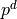
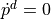

Illustrative results
This section presents the results of the example package provided in the ICube-Robotics/acados_solver_ros2_examples repository.
An interactive Rviz marker is used to set the desired position (i.e., ) of the end-effector of the robot. The user can change the desired position of the end-effector by dragging the interactive marker (see red marker in Fig. 2).
A Python node updates the marker server and publishes the desired position and velocity (that is simply set to ) to the controller. The controller computes the control input to track the desired position and velocity of the end-effector. It is implemented as described in the previous sections.
{kind=link}
Fig. 2 Visualization of the robot in Rviz2.
Installation of the example package and launch
1) Install dependencies
source /opt/ros/humble/setup.bash
mkdir ~/ros2_ws/src
cd ~/ros2_ws/src
git clone https://github.com/ICube-Robotics/acados_solver_ros2_examples.git
vcs import . < acados_solver_ros2_examples/acados_solver_ros2_examples.repos
rosdep install --ignore-src --from-paths . -y -r
2) Build and install ros2 packages
cd ~/ros2_ws/
colcon build --cmake-args -DCMAKE_BUILD_TYPE=Release --symlink-install
# N.B., build a second time to export the acados_template python package
colcon build --cmake-args -DCMAKE_BUILD_TYPE=Release --symlink-install
3) Export and build the Acados solver plugins
cd ~/ros2_ws/
source install/setup.bash
cd src/acados_solver_ros2_examples
echo "y" | python3 ./example_acados_controller/script/export_acados_solver_plugin.py
cd ../..
colcon build --cmake-args -DCMAKE_BUILD_TYPE=Release --symlink-install
4) Launch demo
cd ~/ros2_ws/
source install/setup.bash
ros2 launch example_acados_bringup launch_demo.launch.py launch_plotjuggler:=true
Constraints satisfaction
The robot joint state plots are shown in Fig. 3. The first row shows the joint positions, the second shows the joint velocities, and the bottom raw the torques. NMPC state and control constraints are displayed using the blue and red lines. As visible in Fig. 3, the controller successfully respects the constraints while tracking the desired position.
{kind=link}
Fig. 3 Robot joint state plots in Plotjuggler